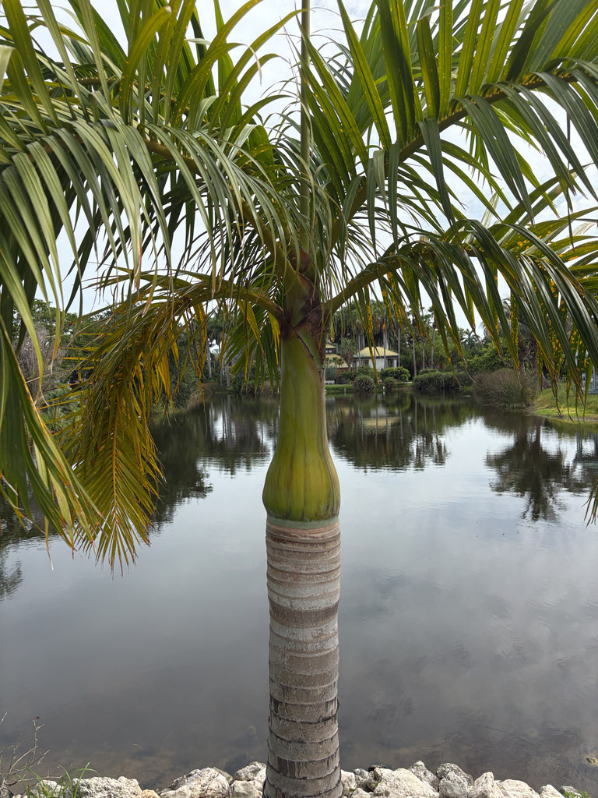

- The Spindle Palm's trunk is its identity: look for the gentle bulge in the middle that tapers at both the base and the top — that is the spindle. Its close cousin the Bottle Palm swells heavily near the base instead. Put them side by side and the difference is obvious; mix them up in a nursery lot and it happens all the time.
- The Spindle Palm is Critically Endangered in the wild — fewer than 60 mature individuals are thought to remain on Rodrigues Island, scattered across a handful of remote ridges. The palm is far more common in Florida gardens than it is in its entire native range.
- The genus name Hyophorbe is built from Greek roots meaning 'pig fodder,' a reference to how islanders once used the fruit. The species name verschaffeltii honors Ambroise Verschaffelt (1825–1886), a Belgian horticulturist.
- The Spindle Palm is monoecious, meaning each individual tree carries both male and female flowers on the same plant — so a single tree can set fruit without a neighbor.
The Spindle Palm is endemic to Rodrigues Island, a small island in the Mascarene archipelago roughly 350 miles east of Mauritius in the Indian Ocean. In the wild it grows on well-drained sandy and limestone-based soils in upland forests and coastal savannas. Fewer than 60 mature individuals are thought to remain in the wild, making it one of the most endangered palms on Earth.
Overgrazing, invasive plants, and heavy seed predation by rats have effectively stopped natural regeneration on the island. The palm is listed as Critically Endangered on the IUCN Red List. Although the wild population remains critically endangered, widespread cultivation provides an important ex-situ conservation reservoir for the species.
In Florida, it grows in south Florida and in sheltered coastal microclimates including the Tampa Bay and Bradenton areas, where warm Gulf-side conditions push it just past its typical zone limit. UF/IFAS documents its cultivation across south Florida and notes it is suited for USDA Zones 10A through 11.
- Start with the field checklist: look for the mid-trunk bulge, then follow the trunk upward to the smooth, waxy green crownshaft — which on younger specimens can show warm yellowish or colorful petiolar tints — and then to the curved, horn-shaped immature flower stalks emerging just below it. Those three features together make a Spindle Palm unmistakable.
- The easiest way to avoid the classic nursery mix-up: the Bottle Palm (Hyophorbe lagenicaulis) swells heavily near the base and tapers upward, while the Spindle Palm is slimmest at the base, widest in the middle, and narrows again into the crownshaft. Both are non-native Mascarene Island species, and both are independently listed as Critically Endangered on the IUCN Red List.
- The Spindle Palm's story has an ironic twist: the very ornamental qualities that put it at risk in the wild — being desirable and easily removed — are exactly what saved it. Cultivation began in Mauritius in the 1860s, spread to European greenhouses by the 1870s, and reached Florida by the mid-20th century.
- Today it is by far the best-known and most widely cultivated member of its genus, grown throughout tropical and subtropical regions even as its wild population — fewer than 60 individuals — continues to decline.
- The Spindle Palm is susceptible to lethal yellowing, a phytoplasma disease transmitted by planthoppers. UF/IFAS has documented lethal yellowing affecting palms in Manatee and Sarasota counties. Because the disease can kill susceptible palms, local monitoring and current UF/IFAS Extension guidance are worthwhile.
The Spindle Palm produces fragrant, creamy inflorescences that emerge below the crownshaft and attract pollinating insects, including bees. As a non-native palm with no deep co-evolutionary history with Florida's fauna, its wildlife value is modest compared to Florida natives.
The fruit — small, oval, and ripening from orange toward red — can be taken by birds, providing some limited dispersal value in cultivation.
The palm is not a documented larval host for Florida butterflies or moths, and it does not function as a significant nectar resource for specialist pollinators. Visitors looking for the park's strongest pollinator habitat will find it in the native plant areas.
Propagation is primarily by seed. Unlike many palms, the Spindle Palm is monoecious — both male and female flowers are borne on the same individual tree, so a single plant can set fruit without a pollination partner nearby. Fresh seed generally germinates within several weeks to a few months under warm conditions.
Fragrant, creamy-white flowers are borne on inflorescences roughly two to three feet long that emerge at the point where the crownshaft meets the trunk. Young inflorescences are notably curved and horn-shaped before they open — a distinctive feature on a mature tree. Flowering has been reported in spring and winter in cultivated Florida specimens.
Small oval fruits about one inch in length follow the flowers, ripening from orange to red and darkening further as they mature. The fruits were historically used as livestock fodder on Rodrigues; they are not considered a human food. The genus name Hyophorbe references this history of use as pig fodder.
Pinnate (feather-type) fronds, typically 8 to 10 per crown, each reaching roughly nine to ten feet in length. Leaflets are bright green above and slightly gray below. The fronds arch upward and outward, then droop at the tips, creating a graceful V-shape silhouette. The crownshaft — the smooth, waxy, green column from which fronds emerge — is one of the most visually distinctive parts of the palm.
Solitary, smooth, and gray, prominently ringed with the scars of shed fronds. The trunk widens gradually above the base, reaches its greatest diameter in the middle, and then constricts again into the crownshaft — the spindle shape the palm is named for. Mature trunk diameter is roughly 10 to 15 inches.
Start with the trunk: look for the gentle bulge in the middle that tapers at both the base and the top — that spindle profile is the whole identity of this palm. Follow the trunk upward to the smooth, waxy green crownshaft, then to the arching fronds that sweep out and droop at the tips.
On a mature specimen, look just below the crownshaft for the inflorescences — curved, horn-like spikes when young, opening to creamy flower clusters. If fruit is present, look for small oval fruits in shades of orange to red nestled along the flower stalks.
The fruits were historically used as livestock fodder on Rodrigues; they are not considered a human food. No significant toxicity to people, dogs, or cats has been documented for this species, and handling the plant poses no known hazard. Otherwise harmless as a landscape specimen.
The Spindle Palm is susceptible to lethal yellowing disease, a phytoplasma transmitted by a planthopper vector. UF/IFAS first observed lethal yellowing in Sarasota and Manatee counties in 2007, and the disease can kill susceptible palms; local monitoring and current UF/IFAS Extension guidance are worthwhile.
The Spindle Palm is frequently confused in nurseries with its close relative, the Bottle Palm (Hyophorbe lagenicaulis).
The easiest tell: the Bottle Palm's trunk swells heavily near the base and tapers upward, while the Spindle Palm's trunk is slimmest at the base, widest in the middle, and narrows again into the crownshaft. Both are non-native Mascarene Island species, and both are independently listed as Critically Endangered on the IUCN Red List.


- © Randall Carter (CC-BY-NC), via iNaturalist